多模态模型
从 CNN 到 VLM：让 AI 同时读懂文字、图像、视频
上节课和期中报告留下的问题
第九课我们把 LLM 当成"会续写文字的概率机器"。期中汇报里，多个同学问到同一类问题——只看文字不够：
"图文混排，单看文本丢了一半信息"
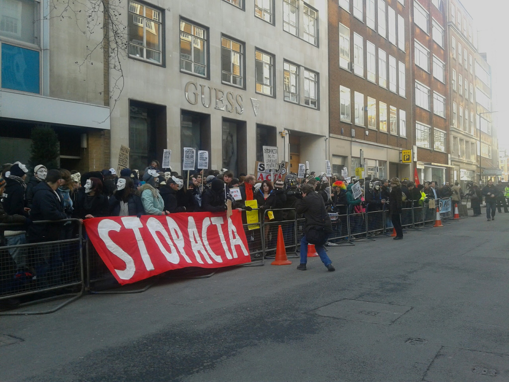
"5000 张现场照片怎么自动数人头、识别标语？"
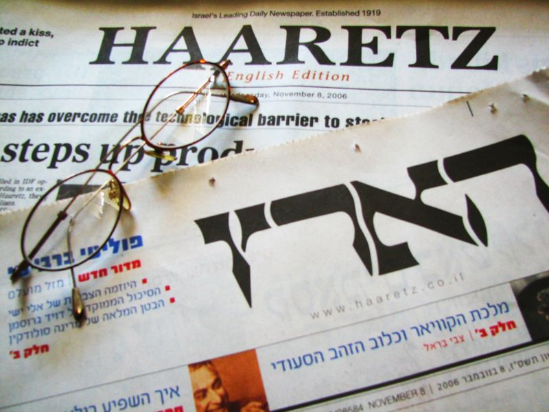
"标题 + 配图 + 短视频要联合分析"
今天给一个统一答案：多模态模型——把图像、视频、音频接进 AI。
今天的路线图
大纲标题是"多模态模型"。所以先讲什么是模态、为什么要联合； 传统的 CNN/ViT 视觉线快速过； 重点放在今天的多模态大模型（VLM）——它的架构、能力、主流型号。 最后落到 OpenClaw 的多模态实操和社科应用。
为什么要联合表示
CLIP 打开大门
架构 + 主流型号
+ 社科案例
Part 1 / 5什么是"模态"？为什么要联合？
模态 = 信息的"通道"
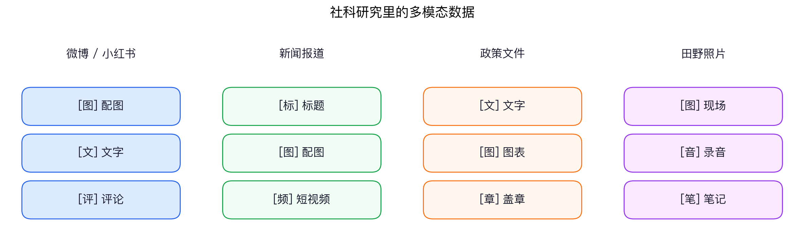
过去十年 AI 每个模态各练各的（NLP / CV / ASR）。 多模态模型 = 让一个模型同时读懂多种通道。
为什么社科研究今天必须懂多模态？
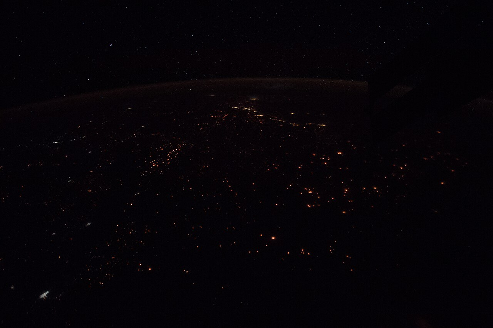
Jean et al. 2016 用它预测
非洲村级 GDP（R²≈0.75）
Gebru et al. 2017 用它
推断社区收入与投票倾向
Won et al. 2017 用它
估计暴力程度 + 视觉属性
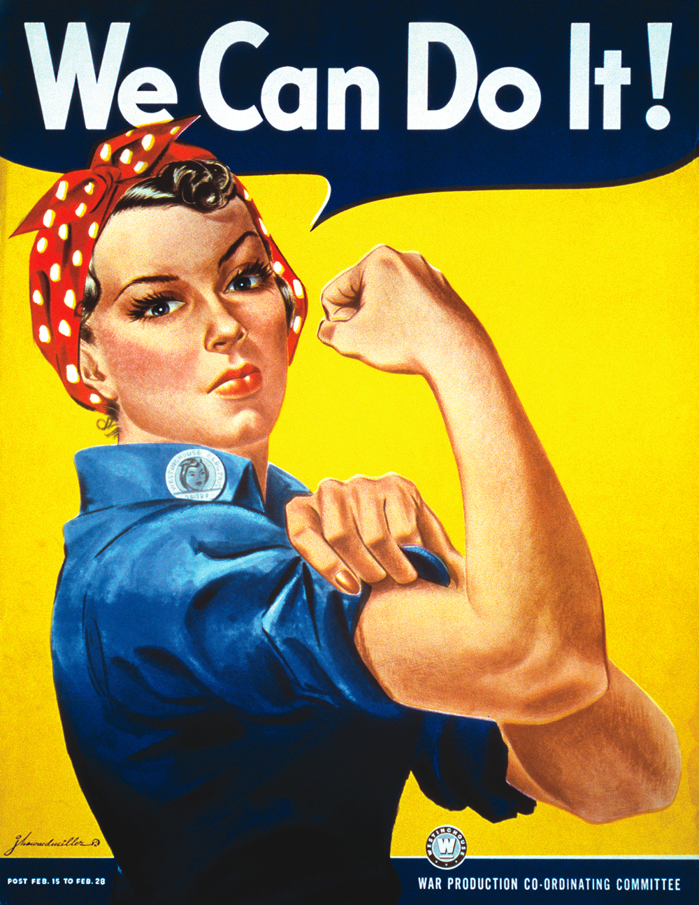
Williams & Casas 2020
编码海报意识形态信号
多模态的两个核心问题

——它们怎么变成可以比较的东西？ © Wikimedia · CC BY-SA
① 表示 Representation
② 对齐 Alignment
后面所有技术（CNN、ViT、CLIP、VLM）都是对这两个问题的不同回答。
Part 2 / 5视觉表示简史：CNN → ViT → CLIP （快速过）
机器"看到"图像的本质
© Wikimedia Commons (CC BY-SA)
模型看到：一个 H × W × 3 的数字矩阵。
每个像素一个 0–255 的 RGB 三元组。
↑ 8×8 的迷你像素阵列。视觉模型干的事—— 把这堆数字压成一个有语义的向量。
文本：word → token → embedding
图像：pixel → patch → embedding
统一后，两类输入都能塞进同一个 Transformer。
CNN：用"卷积核"扫描局部 快速过
分类成
cat / dog / ...
© Wikimedia · CC BY-SA
- 核心：图像有局部性和平移不变性，用小窗口（kernel）扫整张图
- 层级抽象：低层学边缘 → 中层学纹理 → 高层学物体
- 代表：LeNet 1998 → AlexNet 2012 → VGG → ResNet 2015
- 2012 ImageNet：AlexNet 把错误率从 26% 砍到 15%，深度学习破圈
对社科的意义：CNN 第一次让"用图像做测量"成为可行手段。 Naik 2014 用 CNN 给 1.6 万张街景打安全感分数；Gebru 2017 用 CNN 在 5000 万张街景里识别车型，反推社区收入与投票倾向。
局限：每个任务要单独标数据、单独训模型；不会"说话"，只输出标签。
ViT：把 Transformer 搬到图像上 快速过
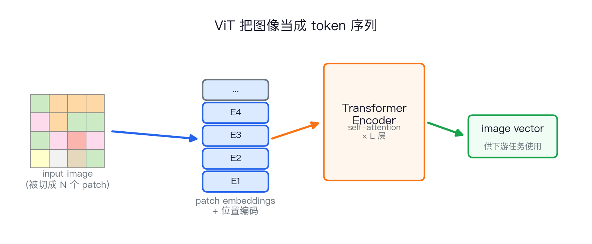
- 把图像切成 16×16 的 patch，每块当作一个 "token"
- 加位置编码，扔进标准 Transformer
- 训练目标和文本 BERT/GPT 几乎一致
- 从此视觉和语言可以用同一种"砖"
今天几乎所有多模态大模型都用 ViT 当视觉编码器。
CLIP：第一次把"图"和"文"真正对齐
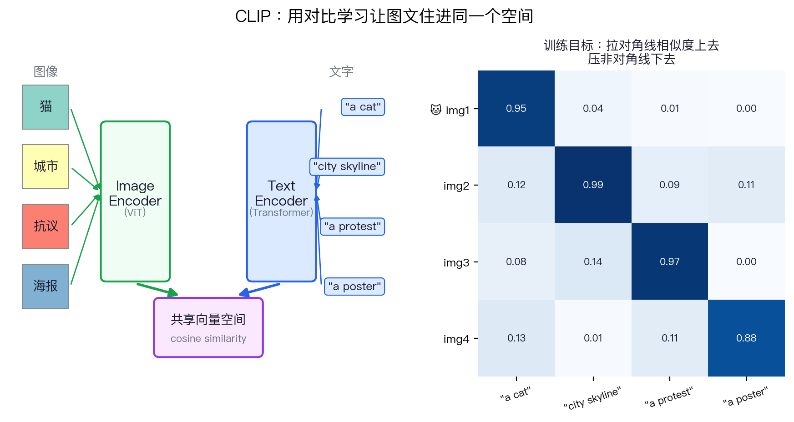
训练完，一句话就能当分类标签——零样本图像分类、检索、过滤、聚类全都解锁。 这是后来 Stable Diffusion、DALL·E、所有 VLM 的技术地基。
本部分小结：三个东西被打通了
Part 3 / 5多模态大模型 VLM （今天的重点）
VLM 是什么？一句话定义
你给它图片 + 文字，它输出文字。
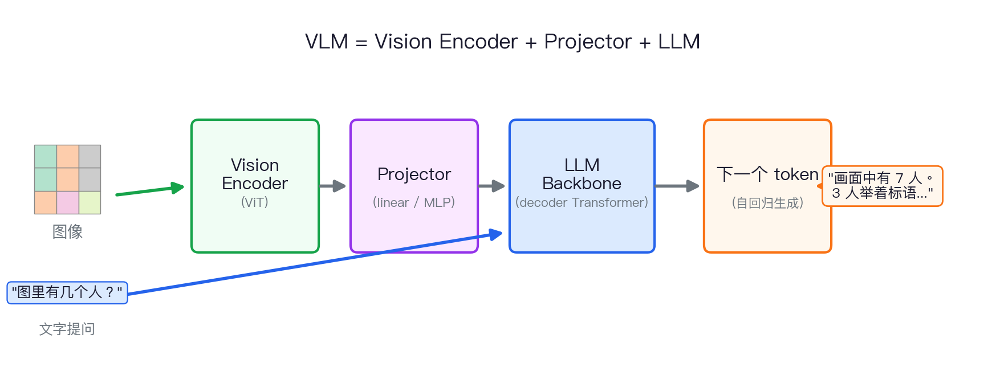
VLM 看到图片之后，内部发生了什么？
≈ 1024–2304 个视觉 token © Wikimedia · CC BY-SA
- 图像切成 N 个 patch（如 24×24=576）
- ViT 把每块 patch 变成视觉 token
- Projector 投影到 LLM 同维度
- 视觉 token + 文字 token 拼成长序列
- LLM 一路读到底，自回归输出
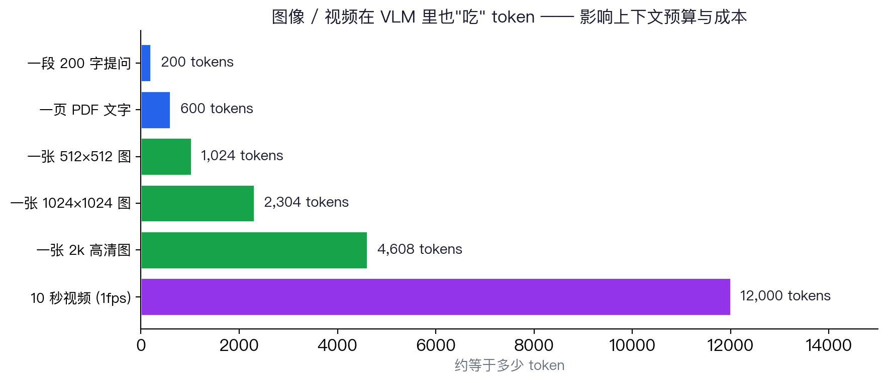
VLM 看一张真实照片：能做什么
"is_protest": true,
"crowd_size_bucket": "大",
"location_clue": "London, Trafalgar Square",
"signs_visible": true,
"violence_visible": false,
"police_visible": false,
"weather": "overcast",
"main_slogan_en": "STOP ACTA"
}
一张照片 + 一段 prompt → 一份结构化数据。这是社科研究真正受益的地方。
VLM 的能力清单
主流多模态大模型：2026 年课堂选型
| 模型 | 厂商 | 视觉 | 视频 | 音频 | 典型场景 |
|---|---|---|---|---|---|
| GPT-4o / GPT-5 | OpenAI | 原生 | 帧 | 原生 | 通用最强，海报/截图/截屏分析 |
| Claude 4.x / Opus 4.7 | Anthropic | 原生 | 帧 | — | 长文档 + 图表，社科最稳的选择 |
| Gemini 2.5 | 原生 | 原生 | 原生 | 长视频理解、Google Workspace 集成 | |
| Qwen3-VL | 阿里 | 原生 | 帧 | 另一系列 | 中文 OCR、政策文件、本地化 |
| DeepSeek-VL2 | DeepSeek | 原生 | — | — | 开源、可自部署、便宜 |
| InternVL / MiniCPM-V | 书生 / 面壁 | 开源 | 部分 | — | 本地/边缘部署、做实验 |
选型原则：中文场景 → Qwen3-VL / DeepSeek-VL； 需要稳定推理 → Claude； 长视频 → Gemini； 预算紧 → 开源自托管。
VLM 和上一讲讲的 LLM 是什么关系？
第九课的 LLM
输出：文字 token
典型：GPT-4 text, Claude text
Skill 接的就是它
本节课的 VLM
输出：文字 token（绝大多数）
典型：GPT-5, Claude Vision, Qwen3-VL
是 LLM 的超集
所以第九课讲的所有东西都还有效：上下文窗口、幻觉、Skill、Prompt 工程。 VLM 只是多了一个"视觉 token 入口"。今天你不需要重新学一种 AI， 你只需要学会怎么把图片喂给它。
VLM 也会幻觉，而且方式更隐蔽
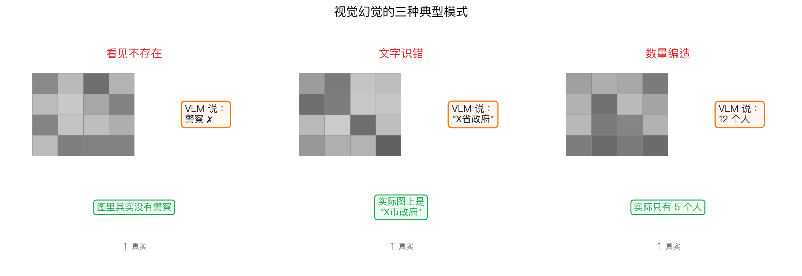
研究者守则：用 VLM 标注 → 必须随机抽样 → 人工核验 → 报告错误率。 和第九课讲 Agent 时的规矩一样。
Part 4 / 5社科应用：多模态在干什么活
四类典型社科应用
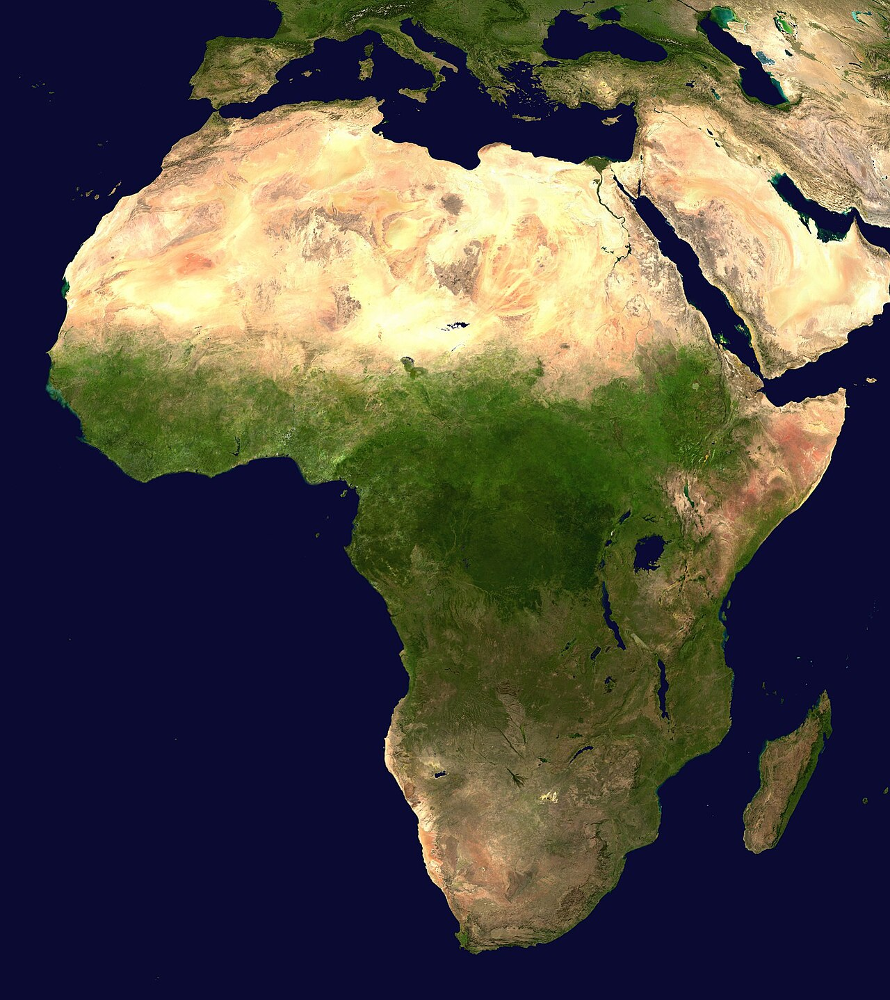
测量贫困、犯罪感、绿化、不平等
Naik 2014 · Jean 2016 · Gebru 2017
人头计数、标语识别、暴力程度
Won 2017 · Sobolev 2020
海报 / 表情包 / 新闻图片视觉框架
Williams & Casas 2020
扫描政策文件、手写问卷、访谈转写
档案数字化（民国报刊、地方志）
案例 1：用卫星图衡量贫困
Jean et al. 2016 (Science)：白天图 + 夜光 → CNN transfer learning → 预测非洲五国村级消费/资产水平，R² 达 0.55–0.75。 在调查数据稀缺的地区首次给出大尺度高分辨率社会经济测量。
案例 2：街景图像 → 推断社区构成
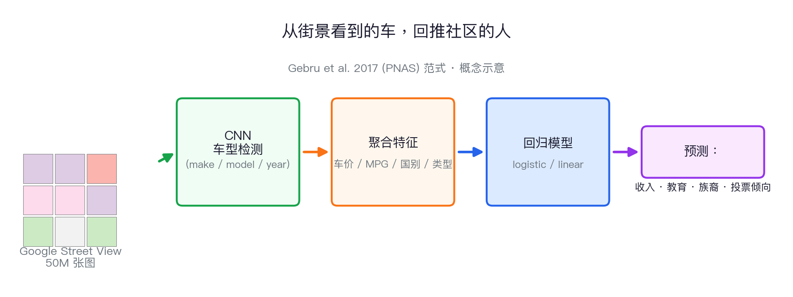
关键发现：城市里 sedan 比 pickup 多 → 88% 概率投民主党；反之 82% 概率投共和党。 用视觉中间变量桥接"图像 → 社会属性"，是社科最值得借鉴的设计思路。
案例 3：抗议照片的自动编码
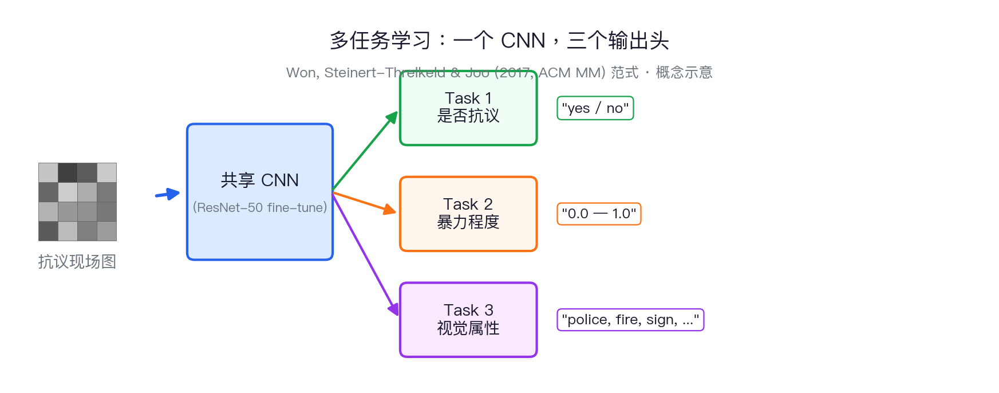
2017 → 2026：从训练多任务 CNN， 变成写一段 prompt 让 VLM 直接输出 JSON。 门槛被推平了——本科生也能做到。
案例：把视频"读"成结构化叙事
典型用例：B 站 / 抖音政治评论视频研究、上访视频、庭审录像、纪录片。 关键 trick：让 VLM逐帧/逐镜头给出客观描述，再让 LLM 把这些描述合成"事件序列"—— 这比"一次性把整段视频塞给 VLM"更可控、更可审计。
Part 5 / 5OpenClaw 多模态实操
OpenClaw 里用多模态：你只需要拖图进去
- 选一个支持视觉的模型（Claude / GPT-5 / Qwen3-VL）
- 把图片拖进对话框（或
@文件路径） - 用自然语言问问题，最好要求结构化输出
- 让 Agent 把结果写进 CSV / JSON / Excel
- 抽 5–10 条人工核验
✅ 这个流程的好处：所有对话保存为 JSONL，可重现、可审计； 数据不出交大服务器。
运行在交大 IDEKube 容器
默认模型：
claude-opus-4-7视觉模型：可切换 GPT-5 / Qwen3-VL
网关端口 18789，
课堂直接用 Web UI，无需配置。
把"多模态分析"写成一个 Skill
延续第九课的思路： 把一次性的视觉分析 prompt，写成可复用的 SKILL.md。 这样下次拿到新一批图片， 你只要说"用 protest-coding skill 标这批图"， Agent 自动加载规范、调用 VLM、写入 CSV。
- 把编码本（codebook）放进 Skill
- 把 JSON schema 固定下来
- 把抽样核验脚本也放进去
---
name: protest-image-coding
description: Code protest photos
into a fixed JSON schema.
---
# 编码规则
crowd_size_bucket:
小: < 50
中: 50–500
大: > 500
# 输出格式
<返回 JSON，字段固定>
# 验证
随机抽 5%，
人工核验后再入库。
课堂实操（20 分钟）
每个字段先定义清楚
抽 3 张人工核对
评估三件事：
① 输出格式稳定吗？ ② 关键字段抽检准确率多少？ ③ 哪些情况下 VLM 系统性出错？
本周作业就是把这个流程跑通，并写一个 200 字的"VLM 在我的数据上能做 / 不能做什么"报告。
怎样验证 VLM 的编码可不可信？
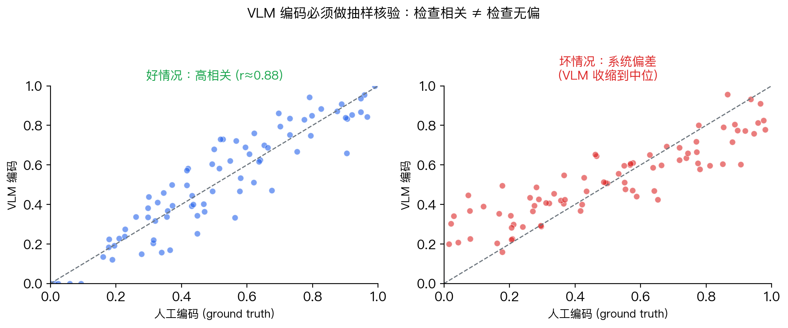
报告时三件事必写：① 抽样规模 ② 相关系数 r ③ 偏差方向（VLM 是否系统性高估或低估）。
多模态的边界：哪些事 VLM 还做不好
✅ 已经很可靠
通用图像描述
简单图表读数
粗粒度场景分类
提取明显物体属性
⚠️ 仍不可全信
细粒度文化语义（地域、政治符号）
手写体、潦草字体
长视频中的因果叙事
细节空间关系（谁在谁左边）
研究者的责任：把 VLM 当成高速但偶尔糊涂的研究助理。 可以让它处理 10 万张图；但你必须设计一套抽样核验机制，再写进论文方法论里。
伦理与合规：多模态特有的风险
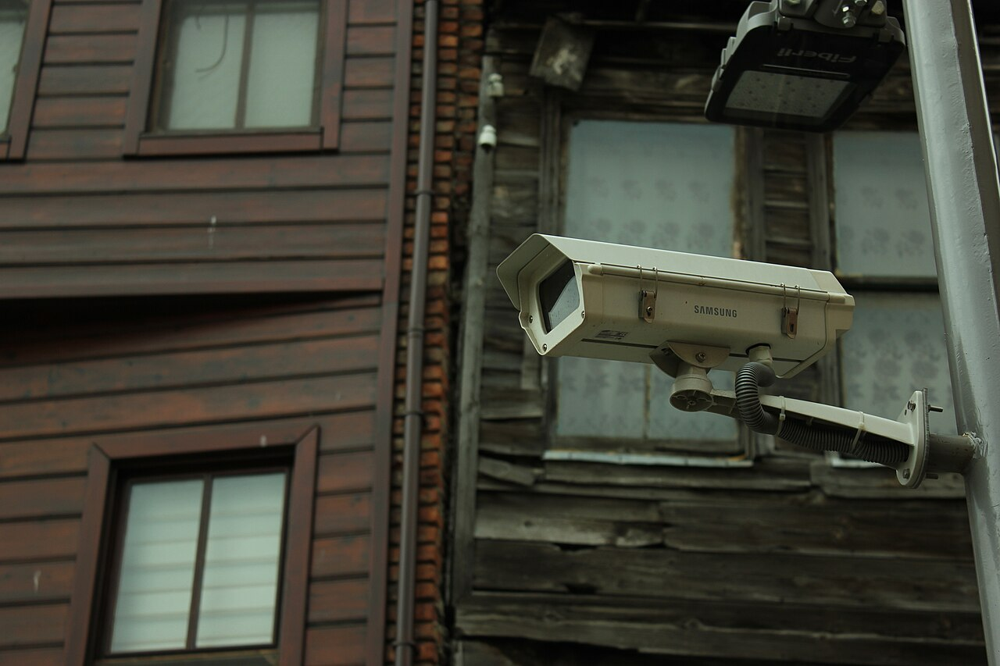
课堂讨论
带着你自己的研究问题：
1. 你的研究数据里有多少模态被你忽略了？为什么？
2. 如果用 VLM 给图像编码，哪个变量你最不放心？怎么验证？
3. 多模态把测量变便宜了——这会改变你的研究问题选择吗？
4. 用 OpenClaw 试一下：上传一张你研究里的图 → 让它输出 JSON
让 Agent 按统一 JSON 编码
抽 3 张人工核对
看分歧在哪
哪个更值得信？为什么？
VLM 在你的数据上
能做 / 不能做什么
多模态不是新 AI
是同一个 LLM
多了一双眼睛
第九课 LLM 的全部规则都还在：上下文、幻觉、Skill、Prompt。
多模态只是让你的原始数据第一次能被算法直接读懂。
过去靠人工编码图像与视频的研究，现在可以放大百倍——前提是你为它设计验证机制。
Seeing is still believing — but verify the model is seeing. 郑思尧 2026